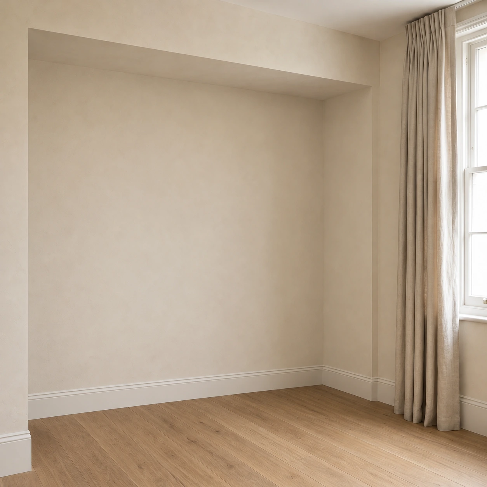
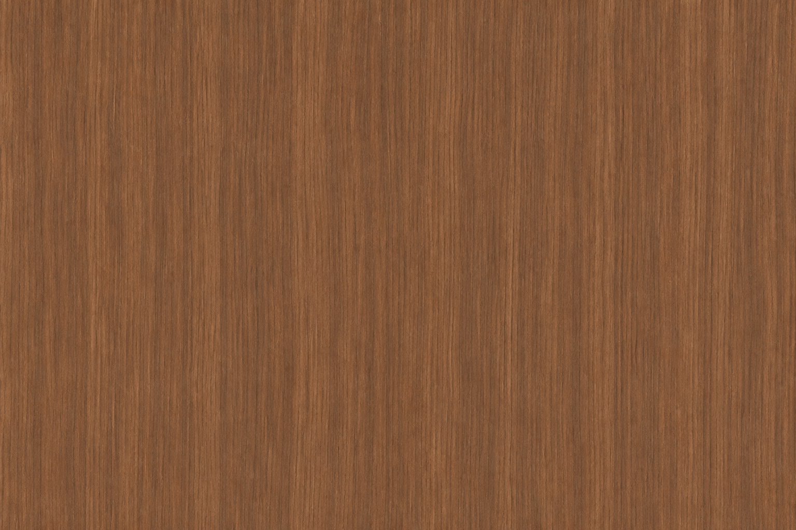
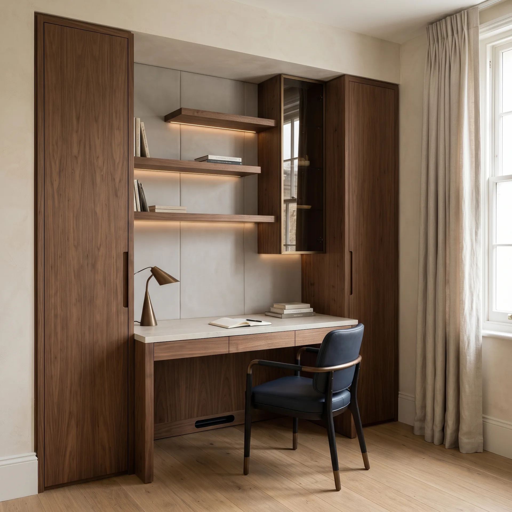

Dejvice Study
A personal space for focused work and a growing collection.


A room to think, read and make space for ideas.
A home study needs to balance a useful working surface with storage and a sense of calm. The design considers daylight, circulation and the relationship between open and closed shelving.
Storage dimensions and the working layout are tailored to the room. Finishes and details are chosen through the same sample-led process as every made-to-measure piece.
- Space
- Other furniture
- Location
- Praha · Dejvice
- Made to measure
- Design · Craft · Installation
Materials & finishes
A focused palette of timber, pale desktop finish, grey backing and lightly tinted glass, reflecting the project photograph. Exact material specifications are confirmed separately.
Finishes · photographic samples

Timber cabinetry
Crisp warm brown grain · illustrative timber sample
Pale desktop
Smooth light finish of the working surface
Grey back panel
Soft grey finish behind the open shelves
Light smoked glass
Lightly tinted glass with soft reflections
Colour palette · sampled from the image
Fixtures & fittings · photo details
Integrated pull
The recessed opening in the tall front
Shelf lighting
The actual illuminated shelf edge
Glazed display
Cabinet framing, glass and shelves
Desk drawers
The drawer unit below the working surface
Considered details
Explore the surfaces, junctions and small decisions that shape the finished piece.

Shelf lighting
Warm light concealed below the timber shelf
Integrated ventilation
Discreet ventilation slot within the timber base
Desktop & drawers
A pale top over walnut-toned storage